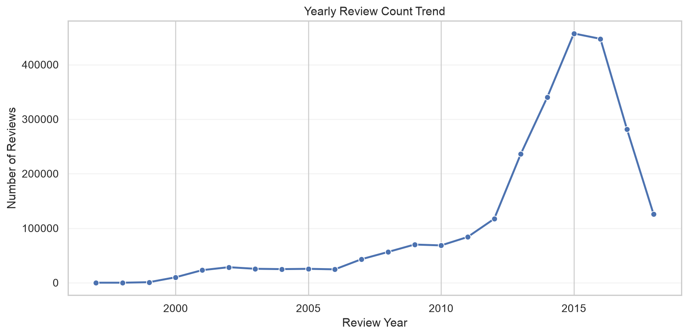
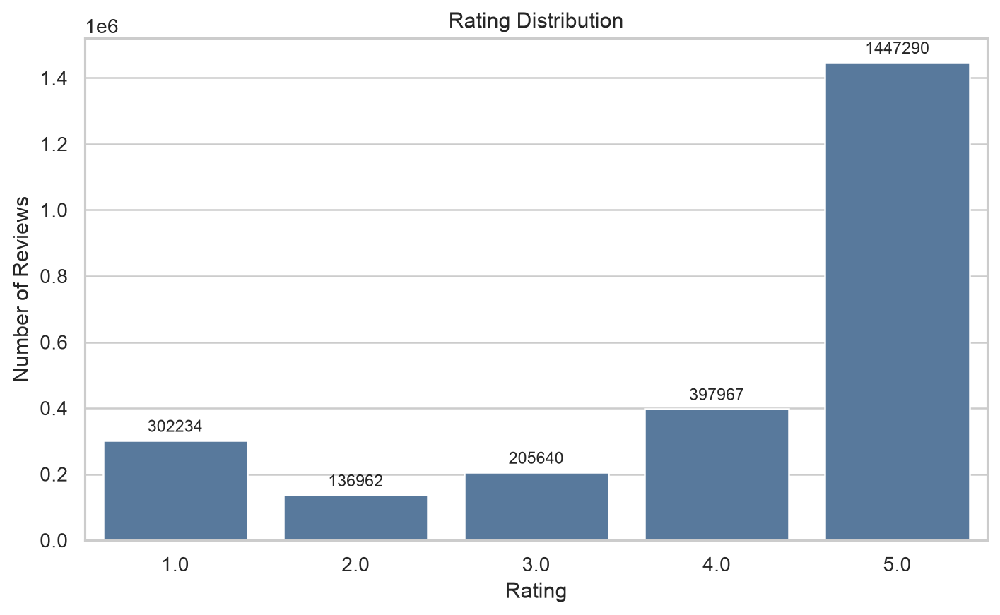
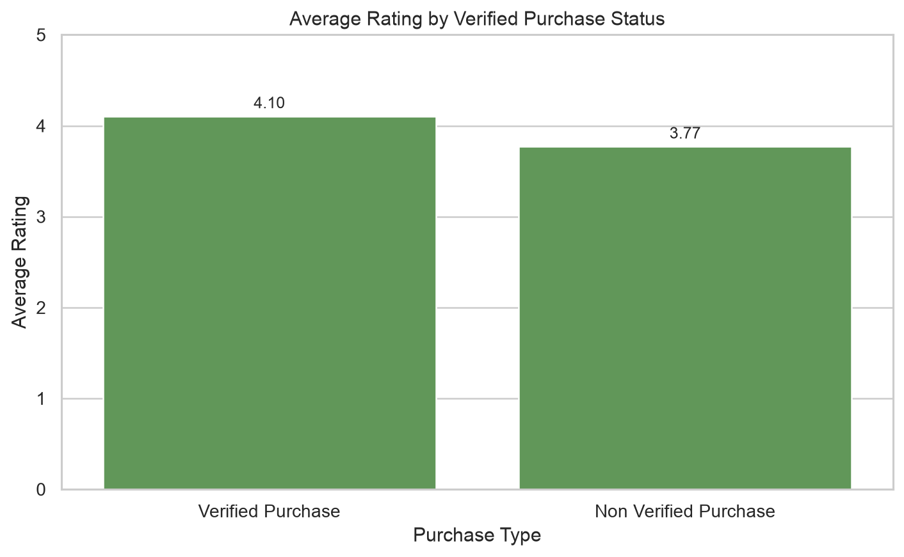
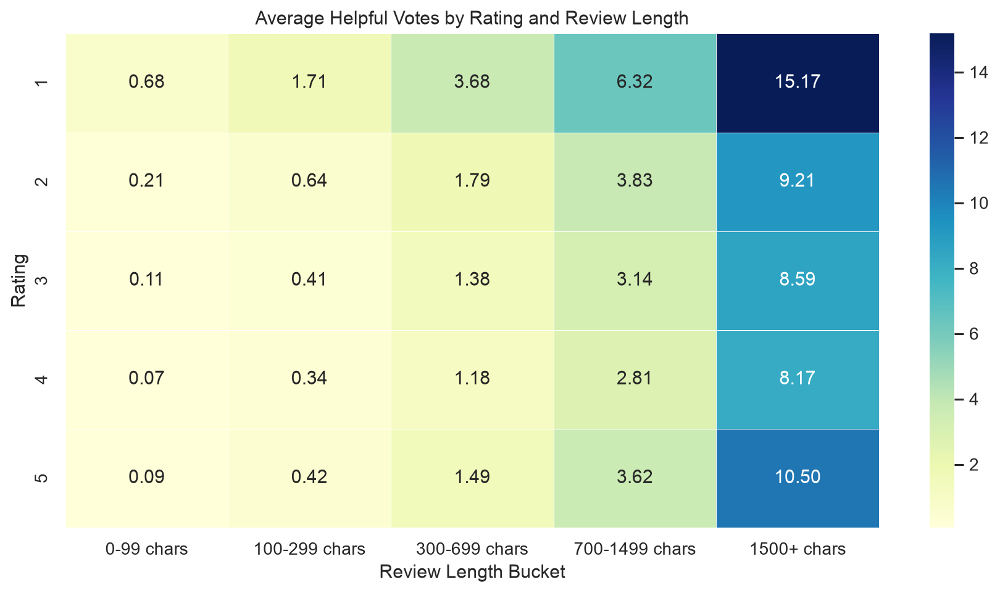
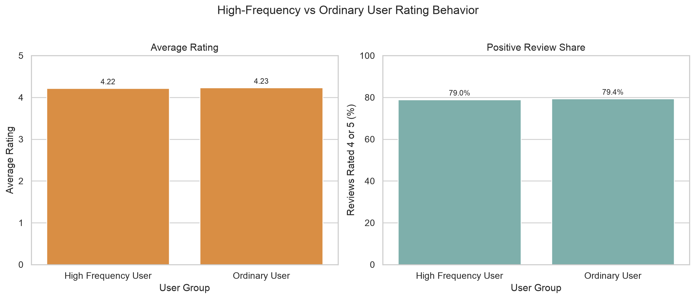
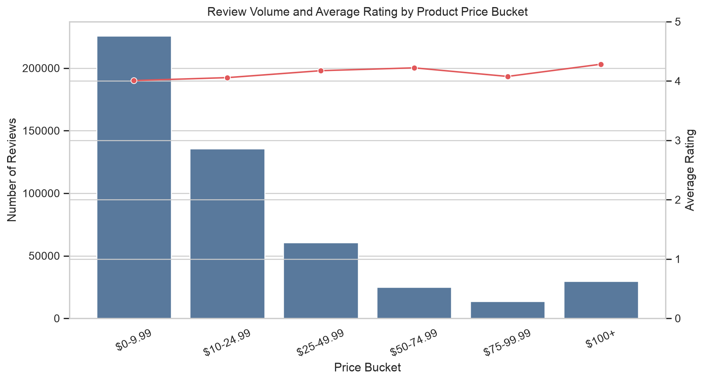
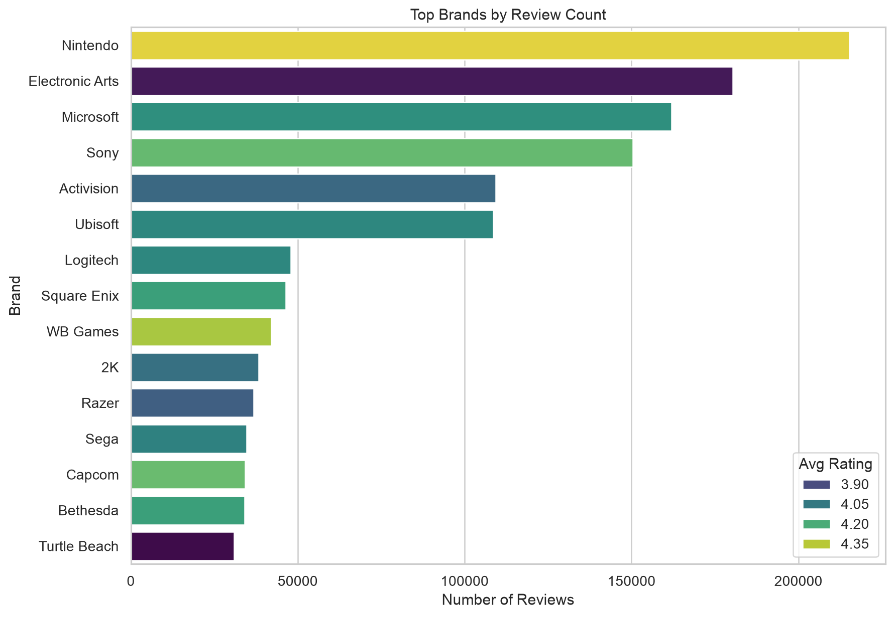
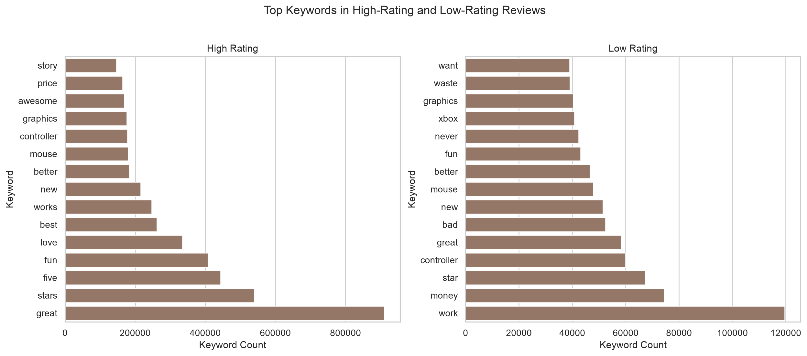
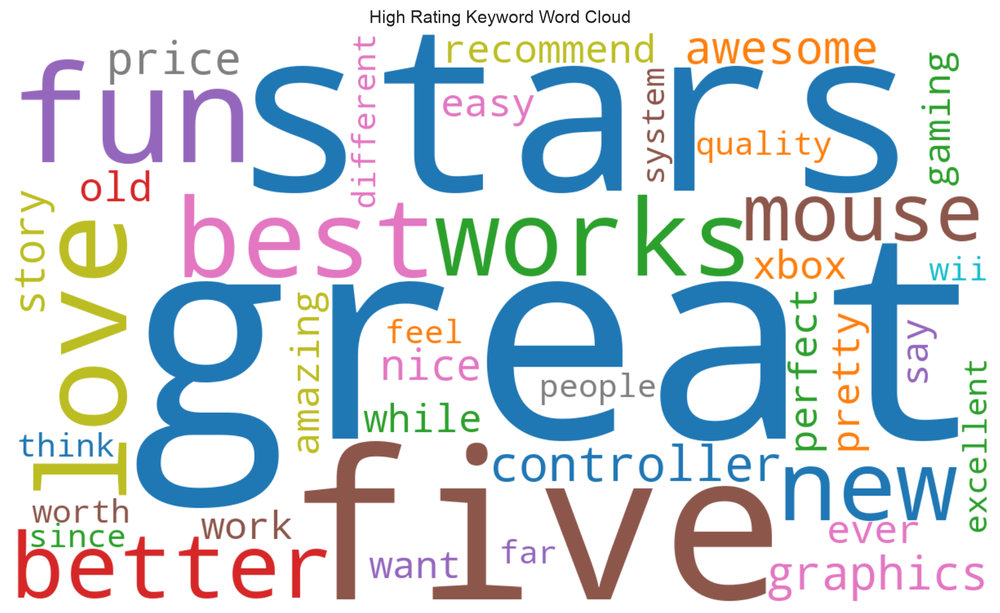
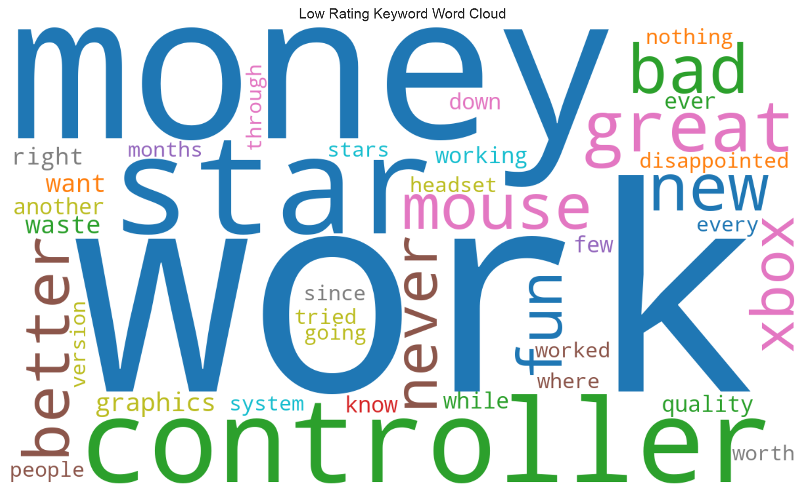

Dataset Overview
This project studies Amazon Video Games reviews and product metadata. The workflow uses raw JSON data in HDFS, cleaned Parquet tables, Spark SQL analysis outputs, and static visualizations for reporting.
Big Data Pipeline: HDFS -> PySpark Cleaning -> Parquet -> Spark SQL -> Visualization
Key Findings
- Review activity changes substantially over time, showing that the category has clear temporal dynamics.
- Ratings are concentrated toward positive scores, which is common in consumer review datasets.
- Verified and non-verified purchases show different average rating and review behavior patterns.
- Helpful votes are associated with both rating level and review length, suggesting that detail matters.
- High-frequency users behave differently from ordinary users in rating tendency and positive review share.
- Price buckets and brands reveal product-level structure that is not visible from review text alone.
- Keyword analysis separates positive experience terms from low-rating complaint terms.
Visualization Gallery

Yearly Review Count Trend
The yearly trend shows how review volume changes across time. This helps identify growth periods, slowdowns, or unusual spikes in customer activity.
The average rating line in the source table can be compared with this volume trend to see whether popularity and satisfaction move together.

Rating Distribution
The distribution summarizes how many reviews fall into each score from 1 to 5. A strong concentration in high ratings suggests generally positive reviewer sentiment.
This chart is a baseline for interpreting later analyses, because user groups, brands, and price buckets should be compared against the overall rating pattern.

Verified Purchase Rating Difference
This chart compares average ratings from verified and non-verified purchase reviews. The gap helps evaluate whether verified buyers express different satisfaction levels.
Verified purchase status also provides a useful signal for trust and review behavior in downstream interpretation.

Helpful Votes by Rating and Review Length
The heatmap shows average helpful votes across rating and review length buckets. Longer reviews often provide more detail, which can make them more useful to readers.
Comparing rows also reveals whether extreme positive or negative reviews attract more helpful feedback than middle ratings.

High-Frequency vs Ordinary User Behavior
This figure compares average rating and positive review share between high-frequency and ordinary users. It highlights whether active reviewers rate products differently from the broader reviewer base.
The 5-core dataset is useful here because it focuses on users and products with stronger review histories.

Price Bucket Reviews and Rating
This chart links product price ranges to review volume and average rating. It helps show whether lower-priced or higher-priced products dominate customer discussion.
The combined bar and line view makes it easier to compare popularity and satisfaction within the same price segmentation.

Top Brands by Review Count
The brand ranking identifies products with the largest review presence after joining reviews with metadata. Review count captures attention, while average rating adds a quality signal.
This view is useful for discussing market concentration and comparing leading brands in the Video Games category.

High and Low Rating Top Keywords
This chart compares the most frequent keywords in positive and negative review groups. It separates words associated with enjoyment and product strengths from words connected to complaints.
The enhanced stopword filtering keeps more meaningful game-related terms such as graphics, controller, mouse, fun, money, quality, broken, and recommend.

High-Rating Keyword Word Cloud
The high-rating word cloud emphasizes terms that appear frequently in positive reviews. Larger words point to features and experiences that satisfied customers mention often.
This view complements the ranked keyword chart by making positive review themes easier to scan visually.

Low-Rating Keyword Word Cloud
The low-rating word cloud highlights terms that appear frequently in negative reviews. These words help identify recurring pain points such as broken products, wasted money, or quality problems.
Comparing this cloud with the high-rating cloud gives a quick view of what separates satisfied and dissatisfied reviewers.
Conclusion and Reflection
This project shows that Amazon Video Games reviews can be transformed from large compressed JSON files into structured analytical outputs through a complete big data workflow. HDFS provides persistent storage for raw and cleaned data, PySpark handles parsing and transformation, Spark SQL supports repeatable aggregate analysis, and Python visualization libraries make the results easier to communicate.
The analysis suggests that review behavior is strongly positive overall, but important differences appear when reviews are grouped by verified purchase status, review length, user activity level, price bucket, and brand. The additional helpful-review prediction task also shows that simple structured features can provide useful signals, while leaving room for deeper text-based modeling in future work.